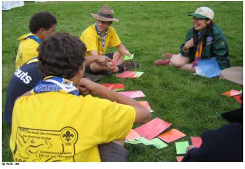
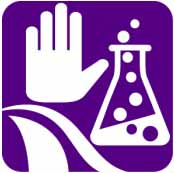

Mi Huella de Carbono


Finalidad 3
Los Scouts trabajan por un mundo en el que el riesgo por las sustancias dañinas en las personas y el medio ambiente sea minimizado.
Objetivos educativos: Explicar el impacto local de las sustancias dañinas en las personas y el medio ambiente, y lo que cada persona, grupos y la comunidad pueden hacer para reducir el riesgo. Comprender el impacto global de las sustancias dañinas y cómo las acciones locales pueden ayudar a cambiar el ambiente mundial.Edad: Clan
Resumen: Una actividad simple para motivar al grupo sobre su uso personal diario de energía y cómo el mismo afecta al medio ambiente.
Objetivo: Aumentar el grado de conciencia de cómo contribuimos al cambio climático en nuestra vida diaria, al comprender cómo nuestras acciones de todos los días están asociadas con la liberación de gases de efectoinvernadero en la atmósfera.
Materiales y equipo: Tarjetas con preguntas, tarjetas de respuesta de color verde, anaranjado y rojo. Las tarjetas de respuesta deben ser de distintos tamaños. Las rojas deben ser las más grandes y las verdes las más pequeñas.
Preparación: Preparar las tarjetas de preguntas y respuestas. Use las preguntas sugeridas al final de este texto y si lo considera apropiado, prepare también otras preguntas relacionadas con su medio ambiente local.
Duración: Media hora.
Lugar: Local de grupo.
Antecedentes: Nuestro planeta está rodeado por una capa de gases. Ésta es nuestra atmósfera. Al brillar el sol sobre la tierra, recibimos calor. Un poco de este calor es absorbido por la superficie de la tierra y otro poco rebota de regreso a la atmósfera El calor reflejado queda atrapado en la atmósfera y mantiene nuestro planeta caliente. Esto se conoce como efecto invernadero.
La capa de gases se hace más gruesa pues lanzamos hacia la atmósfera gases de invernadero al quemar combustibles fósiles para obtener energía y al talar los bosques para la agricultura. Los gases de invernadero son dióxido de carbono (CO2), metano y óxido nitroso. Al ser más gruesa la capa, la temperatura aumenta. Como resultado de esto, nuestro clima está comenzando a cambiar.
Esta actividad explora la manera en que contribuimos al cambio climático en nuestra vida diaria, al comprender cómo nuestras acciones de todos los días están asociadas con la liberación de gases de efecto invernadero en la atmósfera.
Guía paso a paso de la actividad
1. Coloque las tarjetas de preguntas en un círculo y las de respuestas apilándolas adentro del círculo (una pila de verdes, una pila de anaranjadas y una pila de rojas).2. Cada pregunta tiene tres respuestas una verde, una anaranjada y una roja. Al elaborar las tarjetas de respuestas, piense en el número de participantes y las respuestas que más probablemente darán a cada pregunta. Esto determinará cuantas tarjetas de respuesta deberá hacer de cada color. Las tarjetas de respuesta pueden ser más pequeñas si lo considera necesario. Lo que importa de verdad, es que las rojas sean las más grandes y las verdes las más pequeñas.
3. Explique la actividad. Cada participante se mueve alrededor del círculo respondiendo las preguntas y tomando una tarjeta de color por cada pregunta, de acuerdo con su respuesta. Una vez que hayan respondido cada pregunta, buscarán un espacio dónde poner sus respuestas y ordenarlas en un patrón.
4. Una vez que los Scouts hayan organizado su patrón, explíqueles lo que significan. El patrón demuestra su uso diario de energía, el cual, de hecho, representa su huella diaria de carbono. Esta variará de participante en participante. A mayor uso de energía, mayor y más rojo será cada patron, y, a menor uso de energía, menor y más verde serán los patrones.
Preguntas para Mi Huella de Carbono
¿Cómo vas al colegio/liceo/ trabajo?En carro - Tarjeta roja
En bus o metro - Tarjeta anaranjada
En bicicleta o a pie - Tarjeta verde
¿Apagas las luces al dejar una habitación?
Siempre - Tarjeta verde
A veces - Tarjeta anaranjada
Nunca - Tarjeta roja
¿Pones tu televisor en stand by o en modo dormir?
Siempre - Tarjeta roja
A veces - Tarjeta anaranjada
Nunca - Tarjeta verde
¿Haces reciclaje?
Nunca - Tarjeta roja
A veces - Tarjeta anaranjada
Tanto como es posible - Tarjeta verde
¿Compras alimentos de producción local?
Tanto como es posible - Tarjeta verde
A veces - Tarjeta anaranjada
No/No lo sé - Tarjeta roja
¿Con qué frecuencia compras cosas nuevas? (por ejemplo, ropa, cd’s, juegos de computadora, etc.)
Más de una vez a la semana - Tarjeta roja
Una vez a la semana - Tarjeta anaranjada
Una vez al mes o menos - Tarjeta verde
¿Usas energía renovable?
Sí, bastante - Tarjeta verde
Sí, pero no a menudo - Tarjeta anaranjada
No/No lo sé - Tarjeta roja
¿Has plantado un árbol?
Sí, varios - Tarjeta verde
Sí, un árbol - Tarjeta anaranjada
No - Tarjeta roja
Evaluación
Una vez hayan terminado los patrones, propicie una discusión usando las ideas siguientes:
¿Quién tiene el patrón más pequeño y verde, y quién tiene el patrón más grande y rojo?
¿Cómo se sienten al respecto?
¿Cuán verde es el grupo en general?
¿Hay grandes diferencias entre los participantes o todos tienen patrones similares?
Pregunte al grupo cómo se relacionan esas preguntas con la energía. Algunas de las preguntas tienen conexiones directas y obvias con la energía, por ejemplo, ¿Apagas la luz cuando te vas de una habitación?
Otras preguntas necesitan sea analizadas para ser conectadas con la energía, por ejemplo
¿Con que frecuencia compras cosas nuevas?
¿Cuál es la relevancia de las preguntas con respecto a sus vidas diarias?
¿Qué pueden hacer para reducir sus huellas de carbono?
¿Qué sería fácil y que sería difícil de hacer?
¿Qué está hacienda el grupo para ayudar de verdad al medio ambiente?
¿Lo hacen a propósito o por accidente?
Actividades avanzadas
1. Aprender más sobre la energía renovable.
2. Visitar una instalación de energía renovable en el área local.
3. Pida a los Scouts pensar cómo sería su vida diaria si no tuvieran energía. Dirija una reunión semanal sin usar energía.
4. Pida a los Scouts escribir una lista de diez cosas que pueden hacer para reducir su huella de carbono. Deberían pensar en cosas que son fáciles de lograr y otras más difíciles. Después de unas semanas, investigue si han reducido su huella de carbono.
© World Scout Bureau
Rue du Pré-Jérôme 5
PO Box 91
1211 Geneva 4 Plainpalais
Switzerland
Tel.: (+ 41 22) 705 10 10
Fax: (+ 41 22) 705 10 20
worldbureau@scout.org
scout.org
Reproduction is authorized to National Scout
Organizations and Associations which are
members of the World Organization of the Scout
Rue du Pré-Jérôme 5
PO Box 91
1211 Geneva 4 Plainpalais
Switzerland
Tel.: (+ 41 22) 705 10 10
Fax: (+ 41 22) 705 10 20
worldbureau@scout.org
scout.org
Reproduction is authorized to National Scout
Organizations and Associations which are
members of the World Organization of the Scout